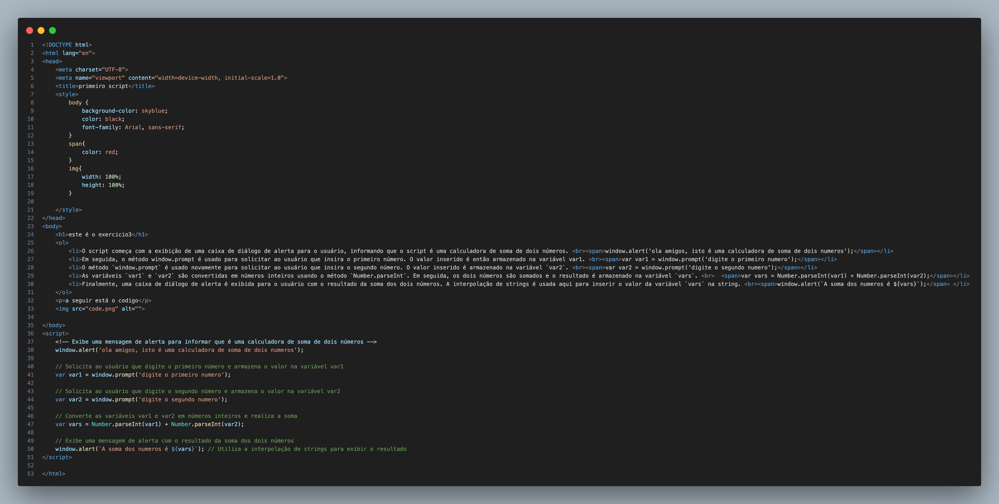

este é o exercicio3
- O script começa com a exibição de uma caixa de diálogo de alerta para o usuário, informando que o script é uma calculadora de soma de dois números.
window.alert('ola amigos, isto é uma calculadora de soma de dois numeros');
- Em seguida, o método window.prompt é usado para solicitar ao usuário que insira o primeiro número. O valor inserido é então armazenado na variável var1.
var var1 = window.prompt('digite o primeiro numero');
- O método `window.prompt` é usado novamente para solicitar ao usuário que insira o segundo número. O valor inserido é armazenado na variável `var2`.
var var2 = window.prompt('digite o segundo numero');
- As variáveis `var1` e `var2` são convertidas em números inteiros usando o método `Number.parseInt`. Em seguida, os dois números são somados e o resultado é armazenado na variável `vars`.
var vars = Number.parseInt(var1) + Number.parseInt(var2);
- Finalmente, uma caixa de diálogo de alerta é exibida para o usuário com o resultado da soma dos dois números. A interpolação de strings é usada aqui para inserir o valor da variável `vars` na string.
window.alert(`A soma dos numeros é ${vars}`);
a seguir está o codigo
